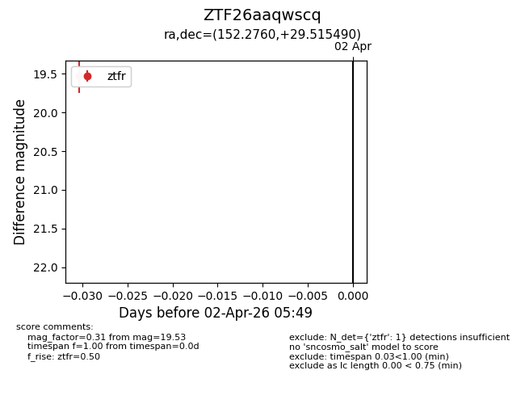
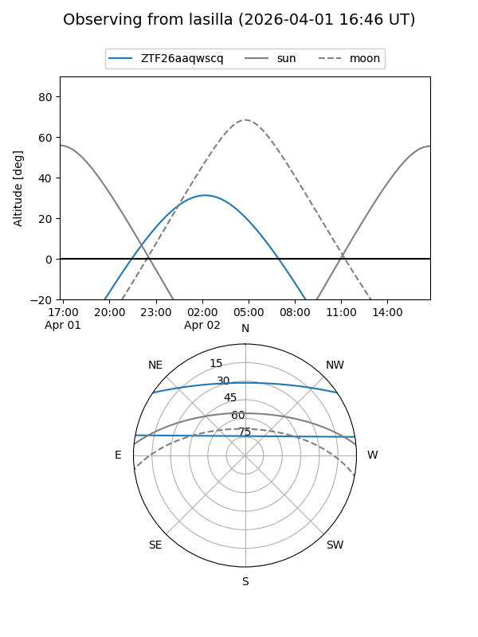
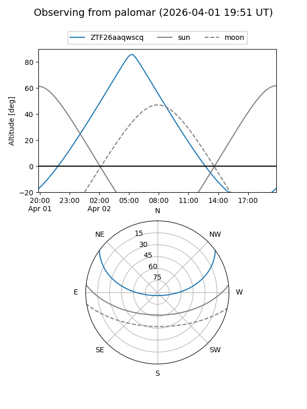

ZTF26aaqwscq
Target ZTF26aaqwscq at 2026-04-02 05:52
Aliases and brokers:
FINK: link
Lasair: link
ALeRCE: link
alt names
ZTF26aaqwscq (ztf,fink_ztf)
Coordinates:
equatorial (ra, dec) = 152.2760,+29.51549
equatorial (HMS+DMS) = 10:09:06.23,+29:30:55.76
galactic (l, b) = (199.3185,+54.37392)
Flags:
Photometry:
last ztfr=19.53
1 ztfr detections
Lightcurve

Visibility


Additional plots